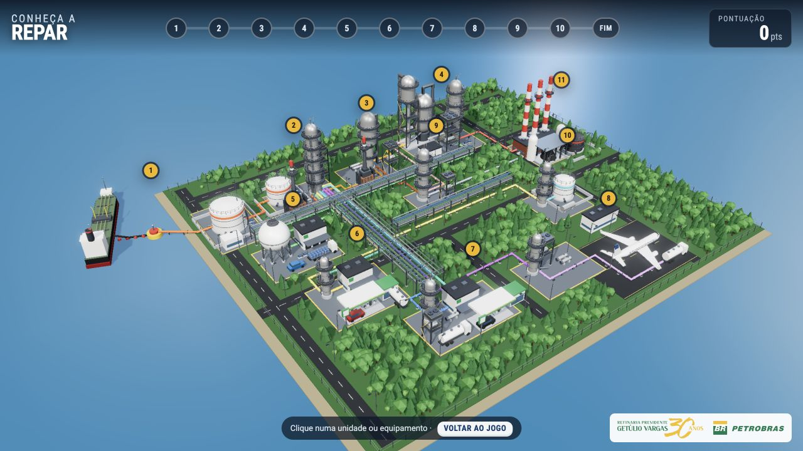
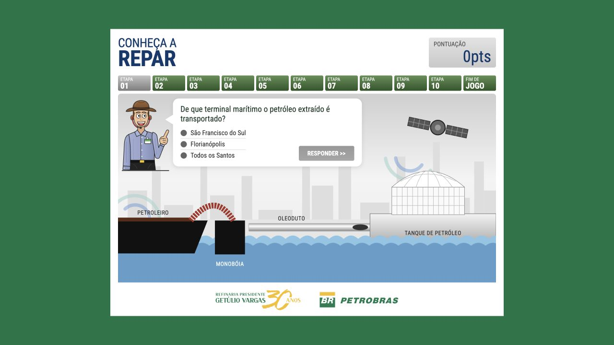

A guided visual journey
In the legacy version, a character introduces the ten stages of refining through 2D illustrations.
Petrobras · Interactive learning · 2D to 3D
Explore REPAR 3D brings together the original illustrated journey and an interactive version that follows the path of oil through the refinery.

The experience follows oil from its arrival at the terminal to the products of refining. Ten stages combine explanations, questions and visual storytelling.
The original project was created in Flash in 2007. The legacy version retains the illustrated sequence; the 3D version offers a guided tour and free exploration of the refinery.
The evolution
In the legacy version, a character introduces the ten stages of refining through 2D illustrations.
The 3D version uses a Blender model, camera movements and illuminated pipes to show the connections between refining stages. Visitors can follow the guided journey or explore freely.
Before & after
Move the divider to see both.

Before · LegacyAfter · 3DDrag horizontally, tap the comparison or use the arrow keys when the slider is focused.
Try the experience
Discover the illustrated journey through ten stages of refining.
Open legacy versionFollow the camera through the refinery or explore the 3D model freely.
Open 3D version